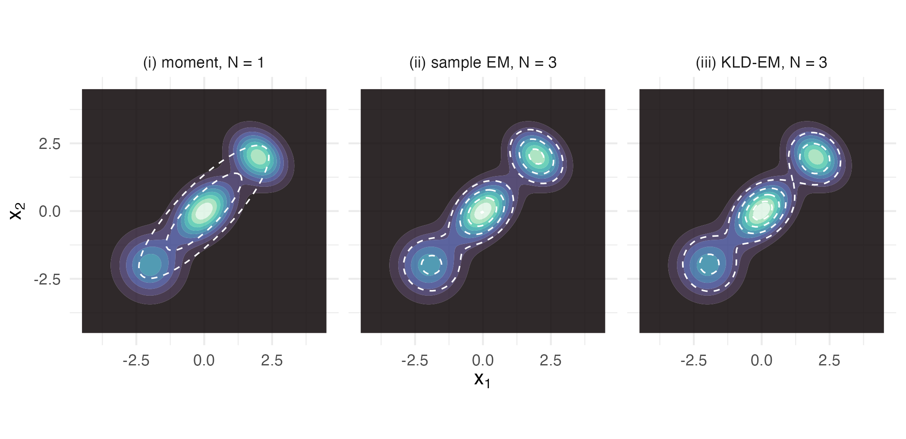
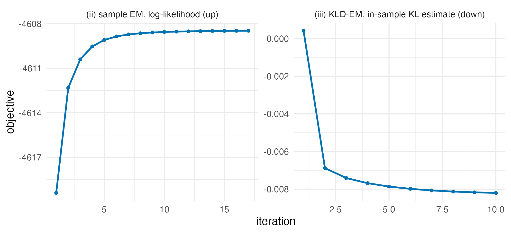
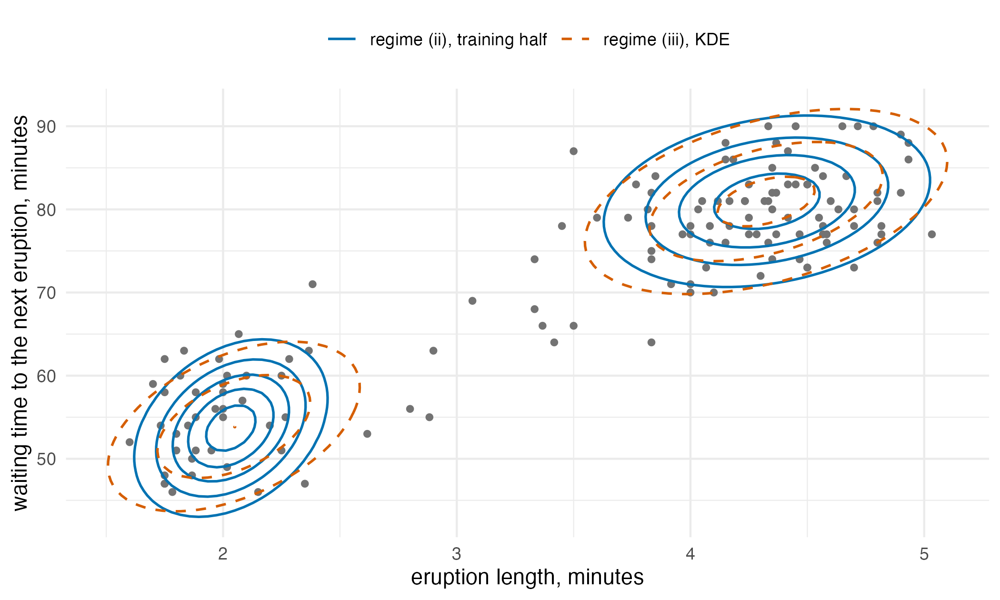

Choosing between the three fitting regimes
Source:vignettes/articles/extended/three_regimes.Rmd
three_regimes.Rmd
has_ggplot2 <- requireNamespace("ggplot2", quietly = TRUE)The problem
A modeller with a target in hand and three regimes on offer asks the practical question: which of the three does my problem actually need, and what do I give up if I pick the wrong one? The routing rule is easy to state and easy to over-trust, because two of the regimes will happily run on the same target and return visibly similar mixtures while answering subtly different questions.
Package capabilities
The three regimes are those of van der Hoek and Elliott (2024), and
they differ in what they need to know about the target rather than in
what they return. All three return a gmm_fit.
fit_moment_match() is regime (i). At N == 1
the KL-optimal Gaussian proxy is the one that shares the target’s mean
and covariance, so the fit is closed form and needs no iteration at all.
It reads moments, which in practice means it reads the samples the
target carries.
fit_em_samples() is regime (ii): textbook
expectation-maximisation on independent draws, maximising the likelihood
of the samples under an N-component mixture. It needs
samples and nothing else.
fit_kld_em() is regime (iii): importance-sampled KLD-EM,
which minimises
using only point-wise evaluations of the target’s log-density,
re-weighted by self-normalised importance weights against a
proposal_mvt() proposal. It needs no samples.
fit_proxymix() dispatches across all three, and
bic_aic() and select_N() choose the component
count, which none of the three does for you.
Addressing the problem
The bundled three-component mixture target is the right test bench: its log-density is known exactly, and because the target is itself a Gaussian mixture its true samples are available too. That is the one setting in which all three regimes can be run on the same object and compared.
tgt <- mixture_target(with_samples = TRUE, n = 1500L, seed = 1L)
tgt
#> <gmm_target>: "three_mixture" in p = 2 dimensions
#> log_density : supplied
#> samples : 1500 x 2 matrix
#> normalised : TRUE
#> log Z(f) : 0Regime (i): closed-form moment matching
At N == 1 the KL-optimal Gaussian proxy has the same
mean and covariance as the target. There is nothing to iterate.
m_fit <- fit_proxymix(tgt, N = 1L, regime = "moment")
m_fit
#> <gmm_fit>: regime = "moment", K = 1, p = 2
#> target : three_mixture
#> iterations : 0
#> converged : TRUE
#> [1] w = 1.0000, |mu| = 0.0328, tr(Sigma) = 5.6029The recovered moments are the empirical moments of the samples the
target carries, not an approximation to them. The only discrepancy is
the diagonal ridge ridge_eps that keeps the covariance
positive-definite, and setting it to zero removes even that.
m_fit_bare <- fit_proxymix(tgt, N = 1L, regime = "moment", ridge_eps = 0)
moment_gap <- c(
mean = max(abs(m_fit@means[[1L]] - colMeans(tgt@samples))),
covariance = max(abs(m_fit@covariances[[1L]] - cov(tgt@samples))),
covariance_no_ridge = max(abs(m_fit_bare@covariances[[1L]] -
cov(tgt@samples)))
)
signif(moment_gap, 3L)
#> mean covariance covariance_no_ridge
#> 0e+00 1e-06 0e+00A single Gaussian is a poor description of a three-mode mixture, but
it is the KL-optimal single Gaussian, and it makes a deterministic seed
for the two iterative regimes at N > 1.
Regime (ii): classical EM on samples
When the target carries samples, the textbook algorithm applies:
- E-step – .
-
M-step – re-weight
by the responsibilities, with a diagonal ridge
ridge_epskeeping positive-definite. -
Convergence – relative change in the empirical
log-likelihood below
tol.
s_fit <- fit_proxymix(tgt, N = 3L, regime = "sample",
max_iter = 200L, n_starts = 4L, seed = 1L)
s_fit
#> <gmm_fit>: regime = "sample", K = 3, p = 2
#> target : three_mixture
#> iterations : 17
#> converged : TRUE
#> [1] w = 0.4061, |mu| = 0.0336, tr(Sigma) = 0.9343
#> [2] w = 0.3032, |mu| = 2.7588, tr(Sigma) = 1.2155
#> [3] w = 0.2907, |mu| = 2.8186, tr(Sigma) = 0.8084Regime (iii): importance-sampled KLD-EM
Regime (iii) fits a proxy when the target’s log_density
is evaluable but no samples are available, which is the situation for
Bayesian posteriors and for downscaling targets in spatial statistics.
The algorithm draws is_size points from the proposal
,
forms self-normalised weights
,
and runs EM iterations in which the M-step minimises
by re-weighting the responsibilities with
.
The proposal is the only free knob beyond the usual mixture configuration, and a Student-t with five degrees of freedom is a robust default.
k_fit <- fit_proxymix(tgt, N = 3L, regime = "kld",
proposal = proposal_mvt(n_dim = 2L,
mean = c(0, 0),
sigma = 6 * diag(2),
df = 5),
is_size = 3000L,
max_iter = 60L,
seed = 1L)
k_fit
#> <gmm_fit>: regime = "kld", K = 3, p = 2
#> target : three_mixture
#> iterations : 10
#> converged : TRUE
#> [1] w = 0.4164, |mu| = 0.0300, tr(Sigma) = 0.8377
#> [2] w = 0.3069, |mu| = 2.7545, tr(Sigma) = 1.2249
#> [3] w = 0.2767, |mu| = 2.7562, tr(Sigma) = 0.8740The three fits side by side
grid_x <- seq(-4.5, 4.5, length.out = 100L)
grid_base <- expand.grid(x1 = grid_x, x2 = grid_x)
grid_mat <- as.matrix(grid_base)
target_d <- exp(tgt@log_density(grid_mat))
panel_of <- function(fit, label) {
data.frame(
x1 = grid_base$x1, x2 = grid_base$x2,
target = target_d,
proxy = dgmm(grid_mat, fit),
regime = label,
stringsAsFactors = FALSE
)
}
overlay_df <- rbind(
panel_of(m_fit, "(i) moment, N = 1"),
panel_of(s_fit, "(ii) sample EM, N = 3"),
panel_of(k_fit, "(iii) KLD-EM, N = 3")
)
overlay_df$regime <- factor(overlay_df$regime,
levels = unique(overlay_df$regime))
ggplot2::ggplot(overlay_df, ggplot2::aes(x1, x2)) +
ggplot2::geom_contour_filled(ggplot2::aes(z = target), bins = 10L,
alpha = 0.85) +
ggplot2::geom_contour(ggplot2::aes(z = proxy), colour = "white",
linetype = "dashed", linewidth = 0.4, bins = 5L) +
ggplot2::scale_fill_viridis_d(option = "mako", guide = "none") +
ggplot2::facet_wrap(~ regime) +
ggplot2::coord_equal() +
ggplot2::labs(x = expression(x[1]), y = expression(x[2])) +
ggplot2::theme_minimal(base_size = 11)
The three-mixture target (filled contours, identical in all three panels) with each regime’s fitted proxy overlaid as dashed contours. Regime (i) is one Gaussian spread across all three modes; regimes (ii) and (iii) both place one component per mode and are visually indistinguishable, despite reading entirely different information about the target.
What each iterative regime optimises
trace_df <- rbind(
data.frame(
iteration = seq_along(s_fit@diagnostics$loglik_trace),
value = s_fit@diagnostics$loglik_trace,
panel = "(ii) sample EM: log-likelihood (up)",
stringsAsFactors = FALSE
),
data.frame(
iteration = seq_along(kld_trace(k_fit)),
value = kld_trace(k_fit),
panel = "(iii) KLD-EM: in-sample KL estimate (down)",
stringsAsFactors = FALSE
)
)
ggplot2::ggplot(trace_df, ggplot2::aes(iteration, value)) +
ggplot2::geom_line(colour = "#0072B2", linewidth = 0.8) +
ggplot2::geom_point(colour = "#0072B2", size = 1.1) +
ggplot2::facet_wrap(~ panel, scales = "free") +
ggplot2::labs(x = "iteration", y = "objective") +
ggplot2::theme_minimal(base_size = 11)
The two iterative regimes optimise different objectives and take different numbers of steps to do it. Sample EM climbs the empirical log-likelihood; KLD-EM drives down the importance-sampled Kullback-Leibler divergence, estimated on the draws the fit is tuned to, which can fall below zero.
Regimes (i) and (iii) at N = 1, against the exact answer
At N = 1 both regime (i) and regime (iii) target the
KL-optimal single Gaussian, so they should agree. They are compared here
on the banana target, where regime (iii) would be the only option if the
samples were withheld, and both are compared against a third quantity
neither of them produced: the exact mean and covariance of the banana
density. The banana is
,
with
and
independent standard normal and
.
Its mean is
,
its two coordinates are uncorrelated, and because
the trace of its covariance is
.
banana <- banana_target(with_samples = TRUE, n = 2000L, seed = 1L)
m_b <- fit_proxymix(banana, N = 1L, regime = "moment")
k_b <- fit_proxymix(banana, N = 1L, regime = "kld",
proposal = proposal_mvt(n_dim = 2L,
sigma = 4 * diag(2),
df = 5),
is_size = 3000L, max_iter = 50L, seed = 1L)
# the warp of banana_target(): x2 = z2 + b * (z1^2 - 1)
b <- 0.5
exact_mean <- c(0, 0)
exact_trace <- 1 + (1 + 2 * b^2)
tr_of <- function(f) sum(diag(f@covariances[[1L]]))
n1 <- list(
mean_gap = max(abs(m_b@means[[1L]] - k_b@means[[1L]])),
trace_gap = tr_of(m_b) - tr_of(k_b),
moment_error = tr_of(m_b) - exact_trace,
kld_error = tr_of(k_b) - exact_trace,
sample_error = sum(diag(cov(banana@samples))) - exact_trace
)
n1$closer <- abs(n1$moment_error) / abs(n1$kld_error)
data.frame(value = signif(unlist(n1), 3L))
#> value
#> mean_gap 0.0376
#> trace_gap 0.2300
#> moment_error 0.1780
#> kld_error -0.0521
#> sample_error 0.1780
#> closer 3.4100| Source | Reads | Trace of covariance | Error against exact value |
|---|---|---|---|
| regime (i), moment match | the attached samples | 2.678 | 0.178 |
| regime (iii), KLD-EM | the log-density | 2.448 | -0.052 |
| attached samples | the attached samples | 2.678 | 0.178 |
| exact moments (closed form) | the definition of the target | 2.500 | 0.000 |
The attached samples and the importance draws are one realisation each. Repeating both over fresh draws shows how far each trace moves by chance.
sample_traces <- vapply(seq_len(500L), function(s) {
sum(diag(cov(banana_target(with_samples = TRUE, n = 2000L,
seed = s)@samples)))
}, numeric(1L))
kld_traces <- vapply(seq_len(100L), function(s) {
tr_of(fit_proxymix(banana, N = 1L, regime = "kld",
proposal = proposal_mvt(n_dim = 2L,
sigma = 4 * diag(2),
df = 5),
is_size = 3000L, max_iter = 50L, seed = s))
}, numeric(1L))
spread <- data.frame(
replicates = c(length(sample_traces), length(kld_traces)),
mean = c(mean(sample_traces), mean(kld_traces)),
sd = c(sd(sample_traces), sd(kld_traces)),
row.names = c("trace of 2000 samples", "regime (iii) trace")
)
round(spread, 3L)
#> replicates mean sd
#> trace of 2000 samples 500 2.496 0.085
#> regime (iii) trace 100 2.488 0.073Interpretation
The moment fit is exact rather than approximate. It reproduces the empirical mean of the target’s samples with a gap of , and the empirical covariance with a gap of – which is not a fitting error but the diagonal ridge itself, since removing the ridge closes that gap to as well. Regime (i) does not approximate the moments; it copies them.
The two iterative regimes land in the same place by different routes. Sample EM took 17 iterations to converge and KLD-EM took 10, and the fitted weights agree to 0.014. The overlay shows why they look alike here: both put one component on each mode, which is the correct answer for a target that is itself a three-component Gaussian mixture. The KLD-EM fit retained an effective sample size of 758 out of 3,000 importance draws, so it reached that answer without leaning on a few high-weight points.
The KLD-EM trace ends at -0.0082, below zero, although a divergence cannot be negative. The trace is estimated on the importance draws the fit was tuned to, so it reads low. On 30,000 held-out draws the estimate is 0.0119 with a Monte Carlo standard error of 0.0017, and quadrature of the exact target density on a grid over , which leaves out of the target’s mass, gives 0.0092.
The N = 1 comparison is where the cost of the choice
becomes visible. The two fits differ in mean by 0.038 and in
trace-covariance by 0.230. Regime (i) matches the moments of the 2000
samples the target happens to carry, and those samples overstate the
exact trace-covariance of 2.5 by 0.178. Regime (iii) never sees those
samples; it reads the density, and its trace-covariance is 0.052 below
the exact value, about 3.4 times closer in this realisation. Both errors
are single draws. Over 500 fresh samples of 2000 points the sample trace
has a standard deviation of 0.085, so this sample’s error is 2.1
standard deviations. Over 100 importance seeds the regime-(iii) trace
has a standard deviation of 0.073 and a mean 0.012 below the exact
value, less than two standard errors of that mean.
So regime (iii) is not merely the fallback when samples are missing. When the log-density is available, it is fitting to the density itself, while regimes (i) and (ii) are fitting to whatever finite sample was drawn from it. With plentiful samples the distinction is immaterial. With 2000 samples the sampling error of the trace is of the same order as the importance-sampling error of regime (iii) at 3,000 draws, so which fit lands closer in a single run is partly chance. What you give up by choosing regime (iii) when samples are plentiful is speed and simplicity: it needs a proposal, it costs 33,000 target evaluations here (3,000 importance draws and 30,000 held-out draws), and it carries an importance-sampling diagnostic that has to be read.
Limitations
This vignette does not choose the number of components. Every fit
above was told N by hand, and the three-mixture target was
picked precisely because the right answer is known to be three. On a
real target the component count is the first thing that has to be
settled, and bic_aic() and select_N() are what
settle it; a count set too low shows up as a residual divergence that
more importance draws will not reduce.
The comparison between regimes (ii) and (iii) is flattering to both here for a reason worth stating. The target is itself a Gaussian mixture with the same number of components as the proxies, so the model is correctly specified and there is no approximation error for either regime to trade against the other. On a target outside the Gaussian-mixture family the two regimes minimise genuinely different objectives, and the fits separate.
The exact N = 1 answer is closed form only because the
banana is a warped Gaussian. A grid quadrature of the same moments on
,
with 400 points a side, leaves out
of the mass and puts the trace at 2.494, 0.006 below the exact value,
because the mass it leaves out lies far out in the
tail, where it weighs heavily on the variance. Grid quadrature is an
independent check in two or three dimensions once its captured mass has
been checked, and it stops being one well before the dimension at which
importance sampling itself becomes the binding constraint.
Regime (ii) is compared above only with the package’s own regimes. The numerical illustration that follows puts it beside three established mixture packages on real data and in simulation, and puts regime (iii) beside a Markov chain Monte Carlo route to the same density.
Numerical illustration
Fitting the Old Faithful eruptions with four packages
The question is which fitted two-component mixture predicts eruptions
it has not seen, and whether regime (iii) reaches the same answer from a
density alone. The data are the 272 eruptions of the Old Faithful geyser
shipped with R as faithful (Azzalini and Bowman, 1990),
each an eruption length in minutes and the waiting time to the next
eruption in minutes. The scatter has two clusters. Half of the eruptions
are held out, every mixture is fitted to the other half, and each is
scored by the mean log-likelihood it assigns to the held-out half.
mclust (Scrucca et al., 2016), mixtools (Benaglia et al., 2009) and
flexmix (Leisch, 2004; Grün and Leisch, 2008) fit the mixture by
expectation-maximisation on the training half, as regime (ii) does.
Regime (iii) is given no samples. Its target is the kernel density estimate of the training half from ks (Duong, 2007), read as a function that can be evaluated at any point, and its competitor on that target is the route an analyst without proxymix would take: draw from the density with the No-U-Turn sampler in Stan (Carpenter et al., 2017) through cmdstanr, then fit a two-component mixture to the draws with mclust. The kernel density estimate itself is scored on the held-out half as the reference for both.
mclust, mixtools, flexmix and ks install from CRAN. cmdstanr is not
on CRAN and installs from the Stan R-universe repository,
stan-dev.r-universe.dev. It also needs a CmdStan installation, which
cmdstanr::install_cmdstan() provides:
install.packages(c("mclust", "mixtools", "flexmix", "ks"))
install.packages("cmdstanr",
repos = c("https://stan-dev.r-universe.dev",
getOption("repos")))
faithful_mat <- as.matrix(datasets::faithful)
set.seed(20260925)
i_train <- sort(sample.int(nrow(faithful_mat), nrow(faithful_mat) / 2L))
train <- faithful_mat[i_train, ]
test <- faithful_mat[-i_train, ]Each fit below is converted to a gmm object, so one
function, dgmm(), scores every mixture on the held-out
half. mclust chooses its covariance structure by BIC from its full list;
flexmix is run through stepFlexmix() with five random
starts, the number proxymix uses by default, where
flexmix() itself makes one start from a random assignment
and stepFlexmix() defaults to three; mixtools runs with its
defaults.
as_gmm_mclust <- function(fit) {
gmm(
weights = fit$parameters$pro,
means = lapply(seq_len(fit$G), function(k) fit$parameters$mean[, k]),
covariances = lapply(seq_len(fit$G), function(k) {
fit$parameters$variance$sigma[, , k]
})
)
}
as_gmm_mixtools <- function(fit) {
gmm(weights = fit$lambda, means = fit$mu, covariances = fit$sigma)
}
as_gmm_flexmix <- function(fit) {
comps <- lapply(fit@components, function(cc) cc[[1L]]@parameters)
gmm(
weights = prior(fit),
means = lapply(comps, function(p) unname(p$center)),
covariances = lapply(comps, function(p) unname(p$cov))
)
}
timed <- function(expr) {
secs <- system.time(g <- expr)[["elapsed"]]
list(g = g, secs = secs)
}
train_df <- data.frame(eruptions = train[, 1L], waiting = train[, 2L])
sample_target <- gmm_target_from_samples(train)
set.seed(1L)
fits <- list(
"proxymix, regime (i), N = 1" =
timed(fit_proxymix(sample_target, N = 1L, regime = "moment")),
"proxymix, regime (ii)" =
timed(fit_proxymix(sample_target, N = 2L, regime = "sample")),
mclust = timed(as_gmm_mclust(Mclust(train, G = 2L, verbose = FALSE))),
mixtools = timed(as_gmm_mixtools(mvnormalmixEM(train, k = 2L,
verb = FALSE))),
flexmix = timed(as_gmm_flexmix(stepFlexmix(
cbind(eruptions, waiting) ~ 1, data = train_df, k = 2L, nrep = 5L,
model = FLXMCmvnorm(diagonal = FALSE), verbose = FALSE
)))
)The kernel density estimate uses the ks plug-in bandwidth matrix. Its
log density is written out as a log-sum-exp over the training points, so
it stays finite far from the data, and it is checked against the
estimate that kde() from ks computes directly at the data
points before being wrapped as a target with no samples.
kde_fit <- kde(train)
H_inv <- solve(kde_fit$H)
log_det_H <- determinant(kde_fit$H)$modulus[[1L]]
centre_q <- rowSums((train %*% H_inv) * train)
log_kde <- function(x) {
if (is.null(dim(x))) x <- matrix(x, nrow = 1L)
q <- outer(rowSums((x %*% H_inv) * x), centre_q, "+") -
2 * x %*% H_inv %*% t(train)
lk <- -0.5 * q - log(2 * pi) - 0.5 * log_det_H
m <- apply(lk, 1L, max)
m + log(rowSums(exp(lk - m))) - log(nrow(train))
}
kde_direct <- kde(train, H = kde_fit$H, eval.points = faithful_mat)$estimate
kde_check <- max(abs(exp(log_kde(faithful_mat)) - kde_direct))
kde_target <- gmm_target(n_dim = 2L, log_density = log_kde,
normalised = TRUE, log_normalizer = 0,
name = "kde of the training half")
fits[["proxymix, regime (iii), on the KDE"]] <- timed(fit_proxymix(
kde_target, N = 2L, regime = "kld",
proposal = proposal_mvt(n_dim = 2L, mean = colMeans(train),
sigma = 2 * cov(train), df = 5),
is_size = 4000L, seed = 1L
))
k_faithful <- fits[["proxymix, regime (iii), on the KDE"]]$gFour chains of the No-U-Turn sampler draw from the same kernel
density estimate, and mclust fits a two-component mixture to the pooled
draws. The sampler reads the Stan program below from the file
kde_target.stan in a folder three_regimes_stan
under the working directory.
data {
int<lower=1> K; // number of kernel centres
int<lower=1> D; // dimension
array[K] vector[D] centre; // kernel centres, the training data
cov_matrix[D] H; // kernel bandwidth matrix
}
transformed data {
matrix[D, D] L = cholesky_decompose(H);
}
parameters {
vector[D] x;
}
model {
vector[K] lp;
for (k in 1:K) lp[k] = multi_normal_cholesky_lpdf(x | centre[k], L);
target += log_sum_exp(lp) - log(K);
}This chunk is complete and runs as shown, but it took about 2.5
minutes on one core (R 4.6.1, Apple silicon); the results below are read
from its stored output. That time covers the whole chunk: compiling the
Stan program, the kernel density estimate, the four chains and the
mclust fit. For a quick run, change iter_sampling = 25000L
to iter_sampling = 1000L.
library(cmdstanr)
library(ks)
library(mclust)
faithful_mat <- as.matrix(datasets::faithful)
set.seed(20260925)
i_train <- sort(sample.int(nrow(faithful_mat), nrow(faithful_mat) / 2L))
train <- faithful_mat[i_train, ]
kde_fit <- kde(train)
model <- cmdstan_model(file.path("three_regimes_stan", "kde_target.stan"),
dir = tempdir())
nuts <- model$sample(
data = list(K = nrow(train), D = 2L, centre = train, H = kde_fit$H),
chains = 4L, parallel_chains = 1L,
iter_warmup = 2000L, iter_sampling = 25000L,
seed = 1L, refresh = 0L
)
draws <- nuts$draws("x", format = "matrix")
nuts_summary <- as.data.frame(nuts$summary("x"))
nuts_divergent <- sum(nuts$diagnostic_summary()$num_divergent)
two_stage <- Mclust(draws, G = 2L, verbose = FALSE)
two_stage_par <- two_stage$parameters[c("pro", "mean", "variance")]| Method | Reads | Held-out mean log-likelihood | Seconds |
|---|---|---|---|
| proxymix, regime (i), N = 1 | the training half | -4.697 | 0.00 |
| proxymix, regime (ii) | the training half | -4.311 | 0.01 |
| mclust | the training half | -4.318 | 0.01 |
| mixtools | the training half | -4.312 | 0.19 |
| flexmix | the training half | -4.308 | 0.09 |
| proxymix, regime (iii), on the KDE | the KDE as a density | -4.277 | 0.07 |
| NUTS draws from the KDE, then mclust | the KDE as a density | -4.281 | 151 |
| kernel density estimate (ks) | the training half | -4.280 | – |
plot_x <- seq(1.2, 5.8, length.out = 120L)
plot_y <- seq(35, 105, length.out = 120L)
plot_grid <- as.matrix(expand.grid(eruptions = plot_x, waiting = plot_y))
contour_df <- rbind(
data.frame(plot_grid, density = dgmm(plot_grid, fits[[2L]]$g),
route = "regime (ii), training half"),
data.frame(plot_grid, density = dgmm(plot_grid, k_faithful),
route = "regime (iii), KDE")
)
test_df <- data.frame(eruptions = test[, 1L], waiting = test[, 2L])
ggplot2::ggplot() +
ggplot2::geom_point(data = test_df,
ggplot2::aes(eruptions, waiting),
colour = "grey45", size = 1.2) +
ggplot2::geom_contour(data = contour_df,
ggplot2::aes(eruptions, waiting, z = density,
colour = route, linetype = route),
bins = 6L, linewidth = 0.6) +
ggplot2::scale_colour_manual(name = NULL,
values = c("#0072B2", "#D55E00")) +
ggplot2::scale_linetype_manual(name = NULL,
values = c("solid", "dashed")) +
ggplot2::labs(x = "eruption length, minutes",
y = "waiting time to the next eruption, minutes") +
ggplot2::theme_minimal(base_size = 11) +
ggplot2::theme(legend.position = "top")
The held-out half of the Old Faithful eruptions with the two-component mixture fitted by regime (ii) to the training half (solid contours) and by regime (iii) to the kernel density estimate of the training half (dashed contours), both drawn at the same density levels. Both routes place one component on each cluster. The regime-(iii) mixture is wider and lower, because the kernel density estimate it fitted adds the kernel bandwidth to the spread of each cluster, so fewer of its contours reach the upper levels.
The four regime-(ii) fits are within 0.011 of one another on the held-out half: proxymix gives -4.311, mclust -4.318 with its VVE covariance structure, mixtools -4.312 and flexmix -4.308. The fits took 0.01, 0.01, 0.19 and 0.09 s in that order. The single Gaussian of regime (i) scores -4.697, the cost of one component for two clusters.
Regime (iii) never saw the training points directly. From the kernel
density estimate alone it reaches -4.277, beside the estimate’s own
-4.280, in 0.07 s with an effective sample size of 1725 of 4,000
importance draws. Its larger component carries weight 0.617, against
0.610 for the regime-(ii) fit to the same half. The sampling route
reaches -4.281 from 100,000 draws in 151 s for the whole reference
chunk, with 5 divergent transitions, a largest R-hat of 1.00 over the
two coordinates and a smallest bulk effective sample size of 1,904. The
density is checked: the largest absolute difference between the density
from the log-sum-exp form and the estimate kde() computes
at the 272 eruptions is
,
where the largest density at those points is 0.0319. This is one split
of one dataset, so the simulation below repeats the regime-(ii)
comparison where the truth is known.
A simulation benchmark
One split is one draw. The simulation repeats the fit on 300 datasets
at each of two sample sizes, 200 and 1000, drawn from the
three-component mixture of the mixture_target() bench
above, whose weights are 0.3, 0.4 and 0.3 and whose means sit at
,
and
.
Every method is told
.
proxymix regime (ii), mclust and flexmix fit the sample. proxymix regime
(iii) is given the mixture’s log density and no sample, with an
importance-sampling seed of its own per dataset, so its row shows what
the density route returns while the sample route sees 200 or 1000
points. mixtools is left out of the simulation: one fit of a 1000-point
dataset with three components, timed at the end of the chunk, took 41 s,
so 600 datasets would take hours.
Two scores are computed against quantities no method produced. The
first is
,
with
the true mixture and
the fitted mixture, by quadrature on a grid of 40,401 points over
,
which leaves out
of the true mixture’s mass. The second is the adjusted Rand index
(Hubert and Arabie, 1985) between the component that generated each
point and the component each fitted mixture assigns it to, computed by
one rule for every method, the largest posterior responsibility. The
share of fits whose divergence exceeds 0.1 is reported as the misfit
rate. This chunk is complete and runs as shown, but it took about 15
minutes on one core (R 4.6.1, Apple silicon); the results below are read
from its stored output. For a quick run, change
n_rep <- 300L to n_rep <- 3L.
library(proxymix)
library(mclust)
library(flexmix)
n_rep <- 300L # datasets per sample size
n_sizes <- c(200L, 1000L)
# the mixture behind mixture_target(): three components in two dimensions
w_true <- c(0.3, 0.4, 0.3)
mu_true <- list(c(-2, -2), c(0, 0), c(2, 2))
S_true <- list(matrix(c(0.6, 0.0, 0.0, 0.6), 2L, 2L),
matrix(c(0.5, 0.2, 0.2, 0.5), 2L, 2L),
matrix(c(0.4, -0.1, -0.1, 0.4), 2L, 2L))
truth <- gmm(weights = w_true, means = mu_true, covariances = S_true)
density_only <- mixture_target()
# KL(truth || g) by quadrature; the grid holds all but 1e-7 of the mass
grid_x <- seq(-6, 6, by = 0.06)
grid <- as.matrix(expand.grid(x1 = grid_x, x2 = grid_x))
cell <- (grid_x[2L] - grid_x[1L])^2
log_f <- dgmm(grid, truth, log = TRUE)
f_grid <- exp(log_f)
kl_quad <- function(g) {
sum(f_grid * (log_f - dgmm(grid, g, log = TRUE))) * cell
}
# component with the largest posterior responsibility for each row
hard_assign <- function(x, g) {
lp <- vapply(seq_along(g@weights), function(k) {
one <- gmm(weights = 1, means = g@means[k], covariances = g@covariances[k])
log(g@weights[k]) + dgmm(x, one, log = TRUE)
}, numeric(nrow(x)))
max.col(lp)
}
as_gmm_mclust <- function(fit) {
gmm(
weights = fit$parameters$pro,
means = lapply(seq_len(fit$G), function(k) fit$parameters$mean[, k]),
covariances = lapply(seq_len(fit$G), function(k) {
fit$parameters$variance$sigma[, , k]
})
)
}
as_gmm_flexmix <- function(fit) {
comps <- lapply(fit@components, function(cc) cc[[1L]]@parameters)
gmm(
weights = prior(fit),
means = lapply(comps, function(p) unname(p$center)),
covariances = lapply(comps, function(p) unname(p$cov))
)
}
timed <- function(expr) {
secs <- system.time(g <- expr)[["elapsed"]]
list(g = g, secs = secs)
}
draw_dataset <- function(n, r) {
set.seed(r)
z <- sample.int(3L, n, replace = TRUE, prob = w_true)
x <- matrix(0, n, 2L)
for (k in seq_len(3L)) {
one <- gmm(weights = 1, means = mu_true[k], covariances = S_true[k])
x[z == k, ] <- rgmm(sum(z == k), one)
}
list(x = x, z = z)
}
one_dataset <- function(n, r) {
d <- draw_dataset(n, r)
x <- d$x
z <- d$z
df <- data.frame(x1 = x[, 1L], x2 = x[, 2L])
runs <- list(
"proxymix, regime (ii)" = timed(fit_proxymix(
gmm_target_from_samples(x), N = 3L, regime = "sample"
)),
"proxymix, regime (iii)" = timed(fit_proxymix(
density_only, N = 3L, regime = "kld",
proposal = proposal_mvt(n_dim = 2L, sigma = 6 * diag(2L), df = 5),
is_size = 3000L, seed = n + r
)),
mclust = timed(as_gmm_mclust(Mclust(x, G = 3L, verbose = FALSE))),
flexmix = timed(as_gmm_flexmix(stepFlexmix(
cbind(x1, x2) ~ 1, data = df, k = 3L, nrep = 5L,
model = FLXMCmvnorm(diagonal = FALSE), verbose = FALSE
)))
)
data.frame(
n = n, rep = r, method = names(runs),
kl = vapply(runs, function(f) kl_quad(f$g), numeric(1L)),
ari = vapply(runs, function(f) {
adjustedRandIndex(hard_assign(x, f$g), z)
}, numeric(1L)),
secs = vapply(runs, function(f) f$secs, numeric(1L))
)
}
res <- do.call(rbind, lapply(n_sizes, function(n) {
do.call(rbind, lapply(seq_len(n_rep), function(r) one_dataset(n, r)))
}))
sim_tab <- aggregate(
cbind(kl = kl, misfit = kl > 0.1, ari = ari, secs = secs) ~ n + method,
data = res, FUN = mean
)
sim_tab
# one mixtools fit at the larger size, timed to justify leaving it out
mixtools_secs <- system.time(
mixtools::mvnormalmixEM(draw_dataset(n_sizes[2L], 1L)$x, k = 3L,
verb = FALSE)
)[["elapsed"]]
mixtools_secs| n | Method | KL to the truth | Misfit rate | Adjusted Rand index | Seconds |
|---|---|---|---|---|---|
| 200 | proxymix, regime (ii) | 0.0527 | 0.050 | 0.835 | 0.039 |
| 200 | mclust | 0.0583 | 0.023 | 0.841 | 0.016 |
| 200 | flexmix | 0.0955 | 0.360 | 0.639 | 0.645 |
| 200 | proxymix, regime (iii) | 0.0068 | 0.000 | 0.875 | 0.036 |
| 1000 | proxymix, regime (ii) | 0.0092 | 0.000 | 0.871 | 0.086 |
| 1000 | mclust | 0.0117 | 0.000 | 0.866 | 0.231 |
| 1000 | flexmix | 0.0647 | 0.267 | 0.626 | 0.973 |
| 1000 | proxymix, regime (iii) | 0.0070 | 0.000 | 0.872 | 0.034 |
At 1000 points neither proxymix regime (ii) nor mclust exceeds the divergence threshold. Their divergences are 0.0092 and 0.0117, a paired difference, proxymix minus mclust over the same datasets, of -0.0026 with a standard error of 0.0003. Their adjusted Rand indices are 0.871 and 0.866, a paired difference of 0.0047 (standard error 0.0008). At 200 points their divergences rise to 0.0527 and 0.0583, a paired difference of -0.0056 (standard error 0.0011), and their adjusted Rand indices differ by -0.0058 (standard error 0.0047), which is not resolved. The divergence exceeds 0.1 in 15 of the 300 datasets for proxymix and 7 for mclust; 10 datasets are misfits for proxymix alone and 2 for mclust alone, for an exact McNemar test p-value of 0.04. flexmix 2.3-21 with five random starts exceeds it in 0.360 of the 200-point datasets and 0.267 of the 1000-point ones, which lifts its mean divergence to 0.0955 and 0.0647 and lowers its adjusted Rand index to 0.639 and 0.626. A rate estimated from 300 datasets carries a Monte Carlo standard error of at most 0.03.
The regime-(iii) row does not move with the sample size, because it reads the density and not the sample. Its divergence is 0.0068 and 0.0070 at the two sizes, 7.7 times below the sample route at 200 points and 1.3 times below it at 1000; the paired differences, regime (ii) minus regime (iii), are 0.0459 and 0.0022, with standard errors of 0.0015 and 0.0003. Its assignments of the sample it never fitted reach an adjusted Rand index of 0.872 at 1000 points. Per fit at 1000 points, proxymix regime (ii) took 0.086 s, regime (iii) 0.034 s, mclust 0.231 s and flexmix with five starts 0.973 s.
In this run proxymix regime (ii) had a lower mean divergence than mclust at both sizes, by more than two paired standard errors, and regime (iii) returned a closer mixture than any sample route because it read the density the samples came from. At 200 points mclust exceeded the divergence threshold in fewer datasets than proxymix regime (ii), 7 against 15 with a McNemar p-value of 0.04, and mclust chose its covariance structure as it went, which no other method did. The comparison covers one mixture in two dimensions with the component count supplied, and neither a mis-specified target, a chosen component count nor a higher dimension was tried.
Further reading
Fitting a proxy to a density you cannot sample is the shorter route into regime (iii) alone, and reads the fit certificate that this vignette only glances at.
How well a mixture proxies four awkward shapes takes regime (iii) to targets outside the Gaussian-mixture family, where the correctly-specified comfort of this vignette’s test bench no longer holds.
Reading the entropy of a fitted mixture covers the component-count question this vignette defers, including the annealed path that discovers a count rather than being told one.
One mixture, many methods shows what a single fitted mixture replaces once the regime question is settled.
Mapping the optima of an objective points regime (iii) at a function that is not a density at all: an objective read as a Gibbs measure, so that the fitted mixture returns every basin of a multimodal landscape at once rather than the one a local optimiser happened to reach.
References
- Azzalini, A. and Bowman, A. W. (1990). A look at some data on
the Old Faithful geyser. Journal of the Royal Statistical Society,
Series C (Applied Statistics) 39(3), 357–365.
https://doi.org/10.2307/2347385. - Benaglia, T., Chauveau, D., Hunter, D. R. and Young, D. S. (2009).
mixtools: An R package for analyzing finite mixture models.
Journal of Statistical Software 32(6), 1–29.
https://doi.org/10.18637/jss.v032.i06. - Carpenter, B., Gelman, A., Hoffman, M. D., Lee, D., Goodrich, B.,
Betancourt, M., Brubaker, M., Guo, J., Li, P. and Riddell, A. (2017).
Stan: A probabilistic programming language. Journal of
Statistical Software 76(1), 1–32.
https://doi.org/10.18637/jss.v076.i01. - Duong, T. (2007). ks: Kernel density estimation and kernel
discriminant analysis for multivariate data in R. Journal of
Statistical Software 21(7), 1–16.
https://doi.org/10.18637/jss.v021.i07. - Grün, B. and Leisch, F. (2008). FlexMix version 2: Finite
mixtures with concomitant variables and varying and constant
parameters. Journal of Statistical Software 28(4), 1–35.
https://doi.org/10.18637/jss.v028.i04. - Hubert, L. and Arabie, P. (1985). Comparing partitions.
Journal of Classification 2(1), 193–218.
https://doi.org/10.1007/BF01908075. - Leisch, F. (2004). FlexMix: A general framework for finite
mixture models and latent class regression in R. Journal of
Statistical Software 11(8), 1–18.
https://doi.org/10.18637/jss.v011.i08. - Scrucca, L., Fop, M., Murphy, T. B. and Raftery, A. E. (2016).
mclust 5: Clustering, classification and density estimation using
Gaussian finite mixture models. The R Journal 8(1), 289–317.
https://doi.org/10.32614/RJ-2016-021. - van der Hoek, J. and Elliott, R. J. (2024). Mixtures of
multivariate Gaussians. Stochastic Analysis and Applications.
https://doi.org/10.1080/07362994.2024.2372605.
Reproduce
The target carries seed = 1L, the regime-(ii) fit and
both regime-(iii) fits on the bench are seeded with
seed = 1L, the exact moments are closed form, and the
replicate traces use seeds 1 to 500 for the samples and 1 to 100 for the
importance draws, so every number in the first five sections is
reproducible from the package alone.
The numerical illustration splits the eruptions after
set.seed(20260925), runs the four regime-(ii) fits after
set.seed(1L), and gives the regime-(iii) fit
seed = 1L. The stored sampling results come from the code
shown, run on 25 September 2026 with R 4.6.1, cmdstanr 0.9.0, CmdStan
2.38.0, ks 1.15.3 and mclust 6.1.3, and that run raised 0 warnings. In
the simulation each dataset is generated after set.seed()
with its own index, and the regime-(iii) importance sampler is seeded
with that index plus the sample size. The stored simulation results come
from the code shown, run on 27 September 2026 with R 4.6.1, proxymix
0.16.0, mclust 6.1.3 and flexmix 2.3-21, and that run raised 0 warnings.
The mixtools version used above is 2.0.0.1.
old_opt <- options(width = 72L)
si_vec <- trimws(capture.output(sessionInfo()), "right")
options(old_opt)
# library paths are single long words, so a long line breaks after a slash
long_vec <- nchar(si_vec) > 72L
si_vec[long_vec] <- gsub("(.{1,68}/)(?=.{8,})", "\\1\n ",
si_vec[long_vec], perl = TRUE)
writeLines(si_vec)
#> R version 4.6.1 (2026-06-24)
#> Platform: aarch64-apple-darwin23
#> Running under: macOS Tahoe 26.6.2
#>
#> Matrix products: default
#> BLAS: /Library/Frameworks/R.framework/Versions/4.6/Resources/lib/
#> libRblas.0.dylib
#> LAPACK: /Library/Frameworks/R.framework/Versions/4.6/Resources/lib/
#> libRlapack.dylib; LAPACK version 3.12.1
#>
#> locale:
#> [1] en_AU.UTF-8/en_AU.UTF-8/en_AU.UTF-8/C/en_AU.UTF-8/en_AU.UTF-8
#>
#> time zone: Australia/Adelaide
#> tzcode source: internal
#>
#> attached base packages:
#> [1] stats graphics grDevices utils datasets methods
#> [7] base
#>
#> other attached packages:
#> [1] ks_1.15.3 flexmix_2.3-21 mixtools_2.0.0.1 mclust_6.1.3
#> [5] proxymix_0.16.0
#>
#> loaded via a namespace (and not attached):
#> [1] plotly_4.12.1 sass_0.4.10 generics_0.1.4
#> [4] tidyr_1.3.2 KernSmooth_2.23-27 lattice_0.23-1
#> [7] pracma_2.4.6 digest_0.6.39 magrittr_2.0.5
#> [10] evaluate_1.0.5 grid_4.6.1 RColorBrewer_1.1-3
#> [13] mvtnorm_1.4-2 fastmap_1.2.0 Matrix_1.7-6
#> [16] jsonlite_2.0.0 nnet_7.3-21 survival_3.8-11
#> [19] httr_1.4.9 kernlab_0.9-33 purrr_1.2.2
#> [22] viridisLite_0.4.3 scales_1.4.0 modeltools_0.2-24
#> [25] isoband_0.3.0 textshaping_1.0.5 jquerylib_0.1.4
#> [28] cli_3.6.6 rlang_1.3.0 splines_4.6.1
#> [31] withr_3.0.3 cachem_1.1.0 yaml_2.3.12
#> [34] otel_0.2.0 tools_4.6.1 dplyr_1.2.1
#> [37] ggplot2_4.0.3 vctrs_0.7.3 R6_2.6.1
#> [40] stats4_4.6.1 lifecycle_1.0.5 fs_2.1.0
#> [43] htmlwidgets_1.6.4 MASS_7.3-66 segmented_2.2-1
#> [46] ragg_1.5.2 pkgconfig_2.0.3 desc_1.4.3
#> [49] pkgdown_2.2.1 pillar_1.11.1 bslib_0.12.0
#> [52] gtable_0.3.6 glue_1.8.1 data.table_1.18.6.1
#> [55] Rcpp_1.1.2 systemfonts_1.3.2 xfun_0.60
#> [58] tibble_3.3.1 tidyselect_1.2.1 knitr_1.51
#> [61] dichromat_2.0-1 farver_2.1.2 nlme_3.1-171
#> [64] htmltools_0.5.9 rmarkdown_2.32 labeling_0.4.3
#> [67] compiler_4.6.1 S7_0.2.2 mvnfast_0.2.8